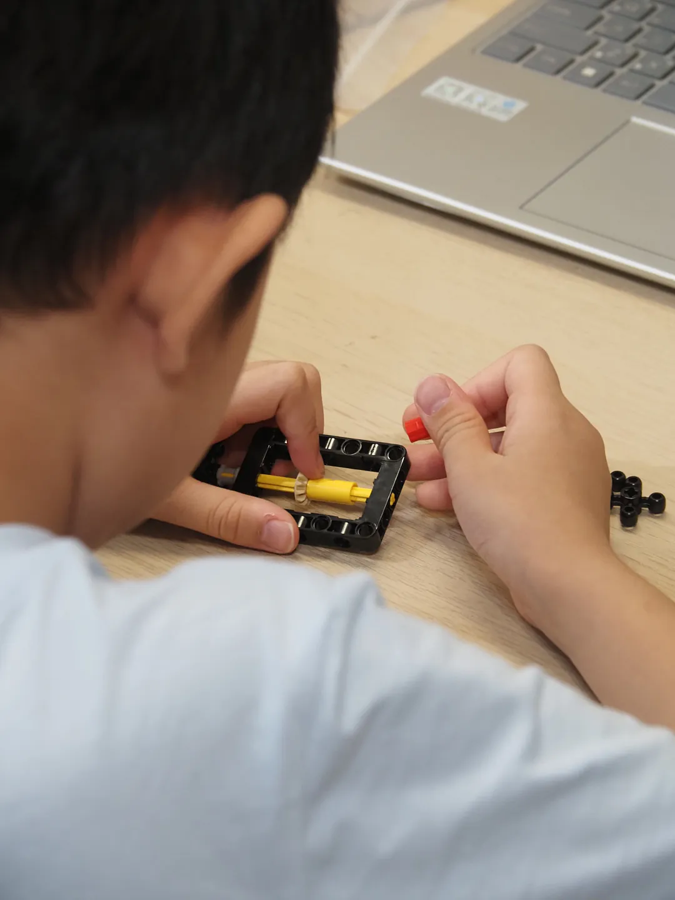
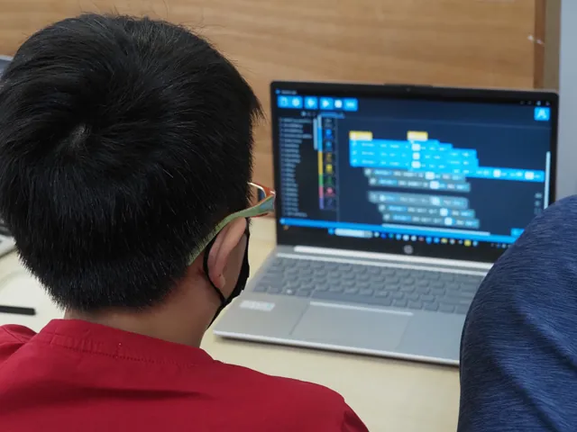

及時看見卡關的地方
老師能觀察孩子組裝、思考與操作的過程，在需要時給出剛好的提問與提示。
樂高機器人 Python 班
從實體機器人走進文字程式。結合機構設計、感測器與馬達控制，看見自己寫下的指令，如何在真實世界運作。
預約免費體驗 ↗看看孩子會學什麼 ↓
認識感測器提供的資訊，思考程式要讀取什麼。
用 Python 的條件與迴圈，安排機器人的回應。
連結馬達控制，在實際測試中調整動作。
點選步驟，看看孩子怎麼學
FIND THEIR START
想學文字程式，又喜歡操作實體機器人，對進階機構與任務挑戰感興趣的孩子。
6–12 年級｜小六 — 高三。老師會依孩子的經驗與學習狀況，協助確認班別。
SMALL CLASS, REAL ATTENTION.
每堂課都有足夠的互動與觀察空間，讓孩子能在自己的節奏裡動手、提問與完成作品。
老師能觀察孩子組裝、思考與操作的過程，在需要時給出剛好的提問與提示。
理解得快的孩子可以繼續延伸；遇到困難時，也有時間一起拆解問題。
孩子有機會分享做法、測試結果與修改想法，從回饋中更清楚地認識自己的作品。
MAKE. TEST. DISCOVER.
認識齒輪比、連桿與槓桿，思考不同機構如何完成任務。
學習語法、條件、迴圈、函式與模組化，連結感測器及馬達控制。
以自走車導航、機械手臂或任務自動化等方向，練習設計與測試。
A CLOSER LOOK
感測器提供資訊，程式做出判斷，馬達執行動作。孩子在實際測試中，觀察每個環節如何影響機器人。
從實作出發，讓學習看得見。
LITTLE MOMENTS, REAL LEARNING
機器人課堂情境，非 Python 課堂實拍

LEARNING BY DOING
從一個創作目標出發，思考需要哪些步驟。
觀察作品與預期的差別，練習說明發現。
在老師引導下調整與測試，累積解決問題的經驗。
NT$ 7,800 / 一期
體驗課程與時間，由老師與您聯絡確認。
MAKE TIME FOR CURIOSITY
查看這門課的固定時段，也能詢問其他開班安排。
此為固定每週課表，假日與臨時調整請洽教室。「無課程，一人可開班」表示可洽詢的開班時段；實際開班與體驗時間，由老師協助確認。
A FEW THINGS TO KNOW
這門課以實體機器人為主，連結機構、感測器與動作控制；Python 程式班則以電腦上的小遊戲、工具與資料處理為主。
一期 12 堂，每堂 1.5 小時，課程費 NT$ 7,800。第一期未自備教具，由教室免費提供。第二期起可自備教具，享三期、每期 1,200 元課程費折扣；使用教室教具則每期另收 2,000 元。實際上課時段由教室協助確認。
可以先預約免費體驗，讓老師了解孩子的年級、學習經驗與興趣，再協助確認班別。
收到確認信後，請加入官方 LINE，主動傳訊息告知孩子姓名。老師會與您確認課程及體驗時間。